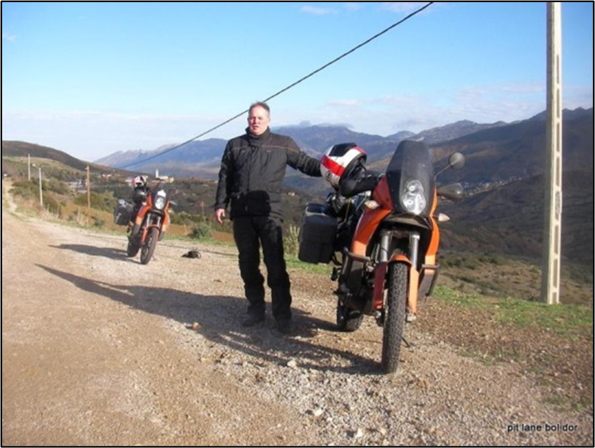
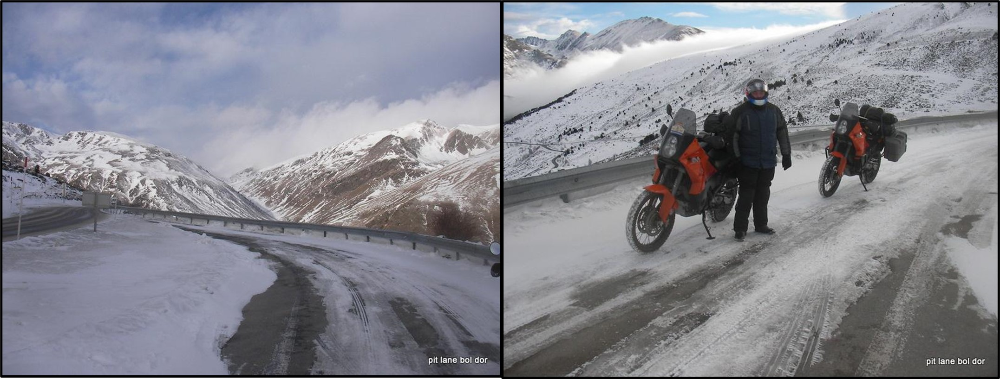
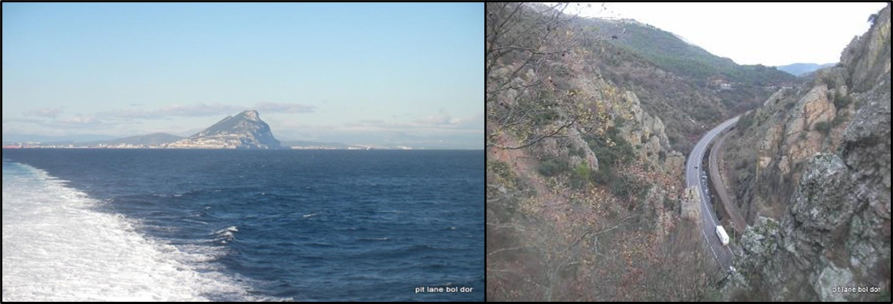
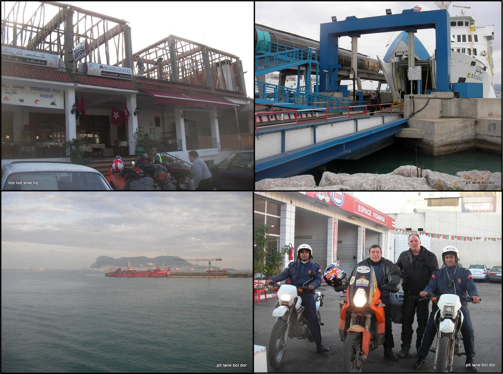
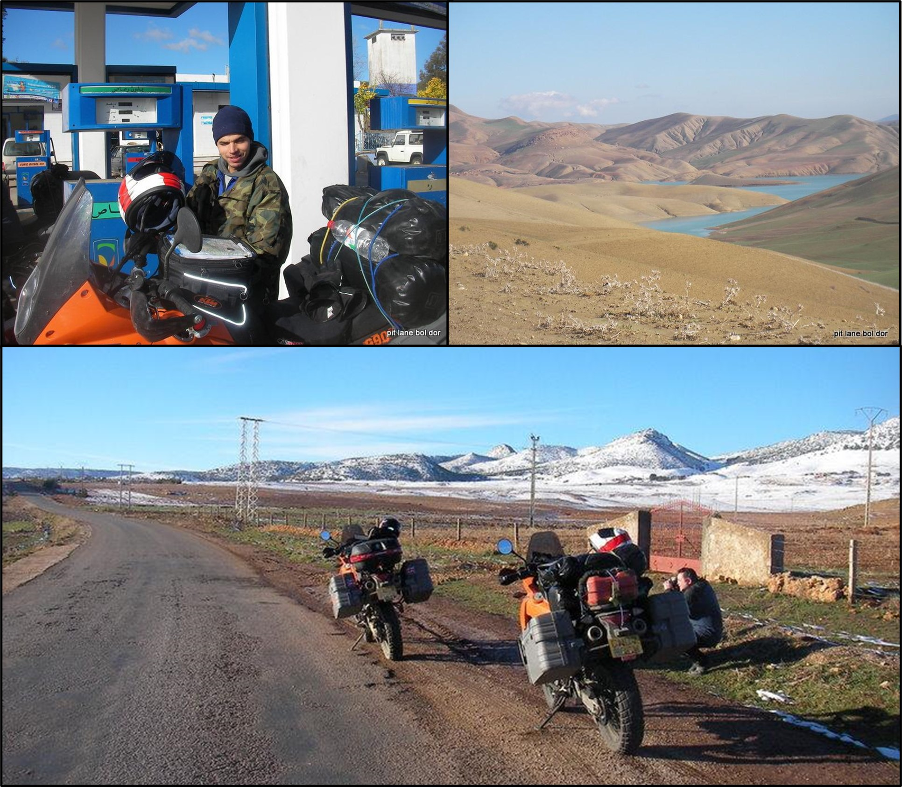
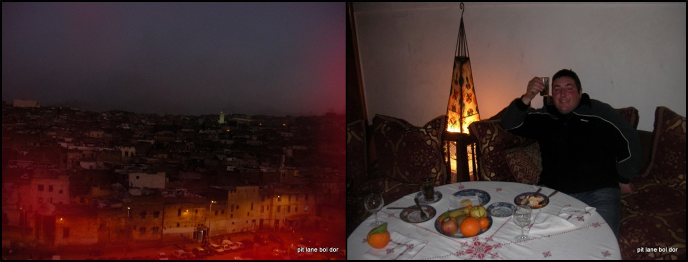
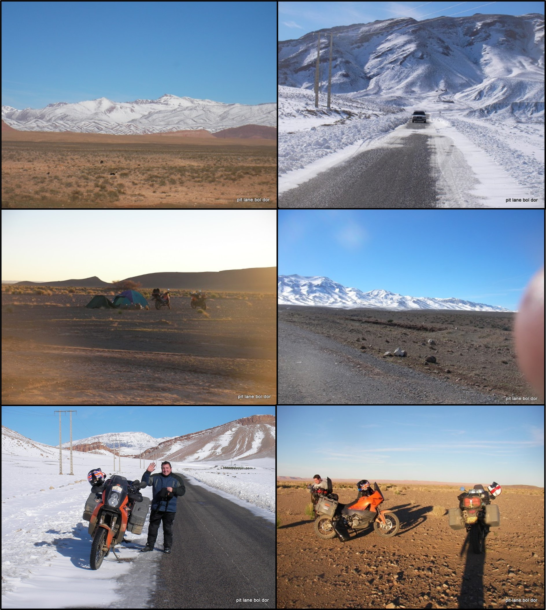
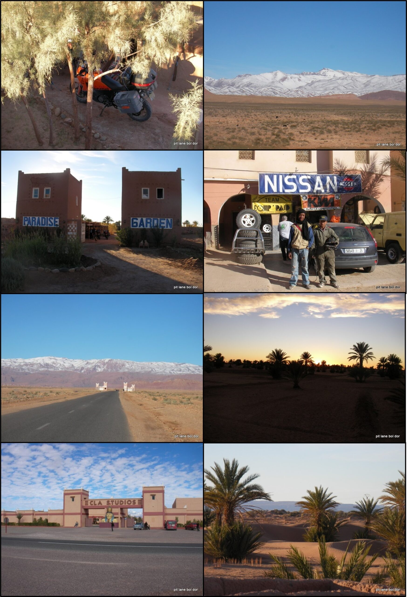
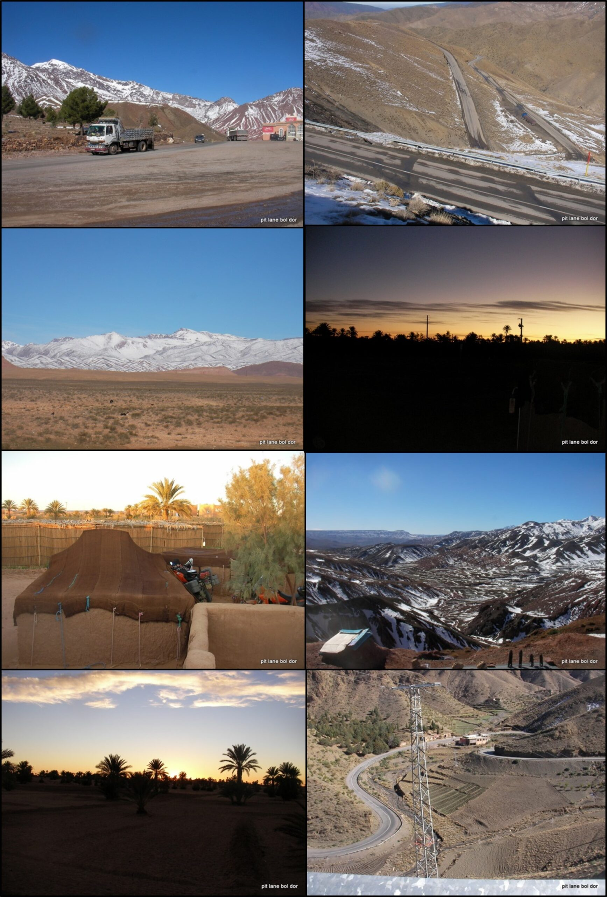
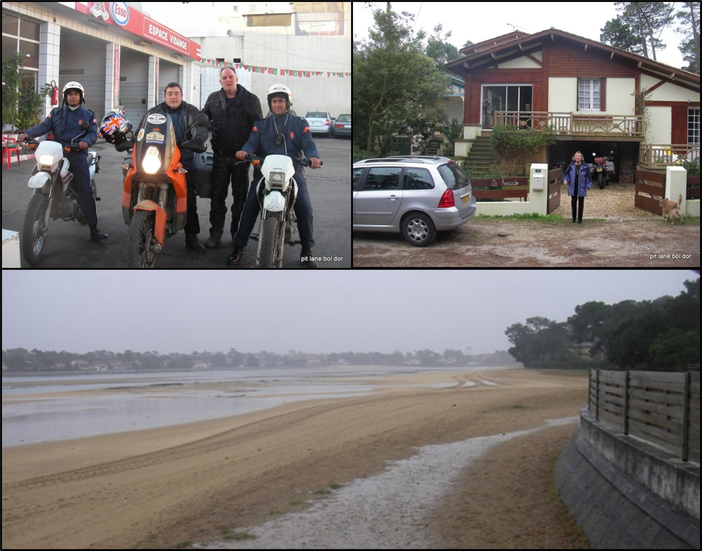

This adventure was though up by a friend of mine. The plan was to grab a couple of weeks early January 2008, and ride down to south Spain, Gibraltar cross into morocco watch the Dakar at a given point
Myself and Simon both brought a couple of new KTMs 990 adventure spec bikes, was my first new bike. we set off early January 2007, and headed towards Toulouse south France, with the intention of crossing the pyrenes, better luck than judgement this time of year. There was a small amount of the black stuff visible whilst crossing over and past the ski resort of Andorra.
Once the Pyrenees was safely negotiated we headed towards Madrid. This was my first venture through central Spain, very rugged, mixed weather but to be expected for the time of year. once we dropped down from the planes of Spain and run along the med coast to Gibraltar nearly felt like English summer time weather. purchased a crossing or ferry ticket that simple, its the other end that gets messy
Not a good start whilst on the ferry crossing to Tangiers we received the news the Dakar had been counselled due to terrorist attacks, and was never to return to this shore to date. First night in morocco was a bit unnerving neither of us have been to these parts before, on top of this the worry in finding a safe and secure accommodation we could leave our treasured biker over night. the early days of travel to these parts, insurance was very hard to obtain, so apart from the obituary three party insurance we are required to get at the border, think the only use this would be if we run over one of there cows. we had no insurance on the bikes or breakdown assistance.
Once we had a good nights sleep under our belts, the confidence and trust grew with Moroccan people. Going through the craziness and bollocks of the preview day at the port entre paper word requirements. The assistance whether you required it or not. How can i describe him a port porter, that you have to pay for an easy passage through chaos, lots of jabbering this window that window, enough to unsettle anyone. once away into the real country the Moroccan folk are forward but very friendly.
We headed in land through the Rif mountains towards Fes. the going was steady, not many vehicles on the roads. Roads were like kent roads, broken tarmac with lots of pot holes to navigate round, as you gained altitude temperature’s dropped very quickly and the white stuff appeared. Nearing the large town of Fes we were confronted by a very friendly Moroccan gentleman offering his services the full package directing us to a safe and secure hotel and a guide around Fes that evening. We had to take a chance with this one. He true to his word, found us a good hotel, and came back later with a taxi to show us the highlights of Fes topping off with a traditional Moroccan feast, all for £30, good man. You needed this as Fes is a jungle of alleyways you could get lost in for days.
Next days we headed towards the Atlas mountains, running along a high plateau, as we gained altitude the scenery got awesome, the snow plentiful at times intruding on to the track/road but giving us just enough of a gap in the road to follow. We were hoping to camp out this evening. Once we dropped down in altitude and left the snow line to better temperatures. The site we settled on was about a mile from the general road, not quite sand as we would have liked, a mixture of gravel and sand. The clearness of the sky once night fell, not something we experience often enough, living near a highly populated area with all the light pollution. Takes your breath away. love camping out in these environments.
After our experience spent under the Moroccan sky, we headed towards Quarzazate an old staging post for the daker, shame we were not able to experience the spectacle and the carnival of back up trucks making there way through. we didn’t have a great plan so we headed onwards, keeping the Atlas mountains in our view on the N9 towards Marrakesh, when we stumbled upon Fort Ricesoli, the film set used and supposedly constructed for the Gladiator film, quite a size hard to believe it was constructed solely for this purpose. Still with a burning desire to ride play experience see the Saharan dunes, we headed towards Mahamid a small out post on the map, the road ended there, bit impulsive, wye not we are on an adventure. Turned out quite a way, over 100 miles, scenery kept our interests pinned to the horizon, amazing, but the rewards at Mahamid the end of the road start of the Sahara, truly was an oasis of sand dunes. accommodation for the night was a kind of fort built into the sand by a Dutch fella, over many year. We had found our real Sahara adventure, perfect.
The journey to Mahamid the previous day was quite demanding in the miles we covered, but the sense of achievement, reaching this town at the end of the road, start of the saharan dunes and the borders of Algeria, the evening we spent under the twinkling sky at paradise gardens was another one of those unforgettable moments . It felt like we had found the adventure we had been looking for, and was homeward bound . Heading towards marrakesh on the N9, the road picks up the river in places, roads following river Gorges tend not to disappoint. We headed up into the Atlas mountains, switch back after switch back, quite challenging for lorry’s, was a main trading route. finally rolling over the top, must be one of the highest road crossings over the Atlas mountains amazing views. Dropping down towards Marrakesh not disappointing, but after the amazing clime up hard to beat. We headed to Marrakesh with the intention of a stop over. Sometimes you are rewarded to much wow factor when on a motorcycle adventure, Marrakesh was not drawing us in, not helped by the open refuge tips on the outskirts of town as we approached. So we by-passed heading to Rabat on the coast for the night. I have been back to Marrakesh with pat, stayed in the inner city is a magical place.
Time to say good bye to morocco for now our mini adventure into Africa was coming to a close. I still have intentions to explore this beautiful, unpredictable, scary continent in depth one day. We spent a computable night at Rabat, heading to tangiers the next day, catching the ferry across to Gibraltar. We headed across central Spain towards Madrid, then on to Donostia San Sabastian on the west coast, crossing the boarder into France, stopping off in a small seaside town Hossegor just over the boarder lovely area, with a close friend of pats for a couple of nights, then home. As with most French tole roads great to cover the millage but can get Tediously boring. Being a couple of weeks mini adventure we still covered 5000 miles. Would have been great to have had more time to take in the Beauty of Morocco, but we are all dictated by time and money restrictions, its better to have experienced a little rather than not at all. Hope to return.
